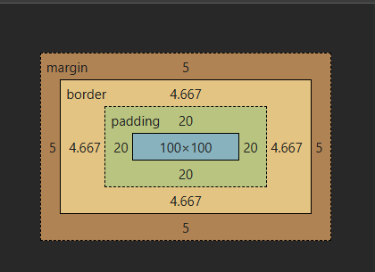
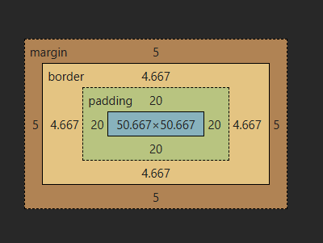

El box-sizing tiene dos valores, una propiedad de CSS que se utilizapara afectar como funciona el modelo de caja predeterminado, como los navegadores calculan el total del tamaño de un elemento, que incluye el contenido, el padding, el borde, imaginemos que tenemos una caja en nuestra página web, esa caja esta compuesta por varias capas: el contenido, el padding, el borde, el margin, le pedimos al navegador que nos calcule el tamaño total de la caja, tenemos dos opciones:
Es el tamaño predeterminado: en este caso cuando le damos el ancho y el alto a nuestra caja, estos valores se aplicaran solo al contenido, si añadimos padding, border, y margin la caja crece más.
Nos posicionamos del borde, le damos ancho y alto a la caja, cuando añadimos padding y border, la caja no crece, el contenido se ajustara dentro del espacio.
El ancho y alto sera solo para el contenido, el padding, border, y margin que agregemos se sumara al tamaño total de la caja y ocupara más espacio del alto y ancho que declaramos
El tamaño es fijo, por más padding y border que agreguemos la caja no crecera más allá del ancho y alto que declaramos
